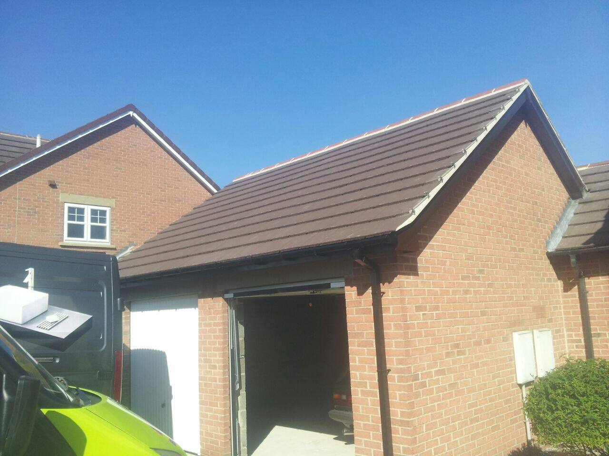

Fire Damage Remedial work Blacker Hill
TypeBuilding
Photos9
AreaBarnsley & South Yorkshire

About the project
Carried out fire damaged remedial works to double Garage.
New electrical installation.
New gutter and fall pipes.
Included re-building gable wall and installing 2 new automatic garage doors.
Also whole of the roof needed replacement